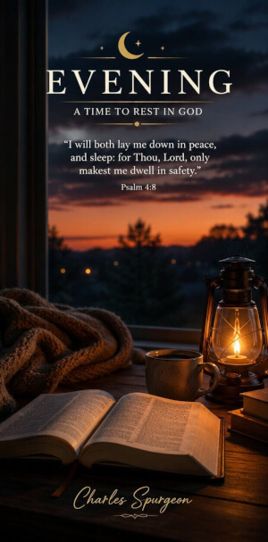
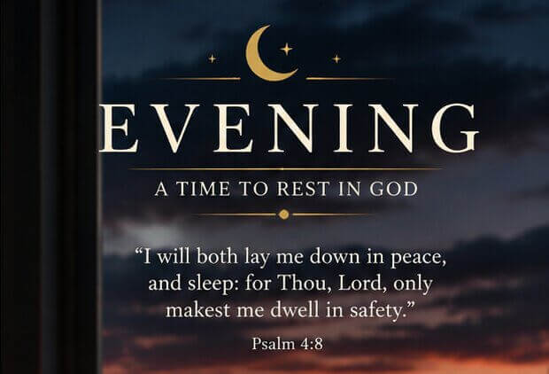

Jesus will not let His people forget His love. If all the love they have enjoyed should be forgotten, He will visit them with fresh love. "Do you forget my cross?" says He, "I will cause you to remember it; for at My table I will manifest Myself anew to you. Do you forget what I did for you in the council-chamber of eternity? I will remind you of it, for you shall need a counsellor, and shall find Me ready at your call." Mothers do not let their children forget them. If the boy has gone to Australia, and does not write home, his mother writes--"Has John forgotten his mother?" Then there comes back a sweet epistle, which proves that the gentle reminder was not in vain. So is it with Jesus, He says to us, "Remember Me," and our response is, "We will remember Thy love." We will remember Thy love and its matchless history. It is ancient as the glory which Thou hadst with the Father before the world was. We remember, O Jesus, Thine eternal love when Thou didst become our Surety, and espouse us as Thy betrothed. We remember the love which suggested the sacrifice of Thyself, the love which, until the fulness of time, mused over that sacrifice, and long for the hour whereof in the volume of the book it was written of Thee, "Lo, I come." We remember Thy love, O Jesus as it was manifest to us in Thy holy life, from the manger of Bethlehem to the garden of Gethsemane. We track Thee from the cradle to the grave--for every word and deed of Thine was love--and we rejoice in Thy love, which death did not exhaust; Thy love which shone resplendent in Thy resurrection. We remember that burning fire of love which will never let Thee hold Thy peace until Thy chosen ones be all safely housed, until Zion be glorified, and Jerusalem settled on her everlasting foundations of light and love in heaven.